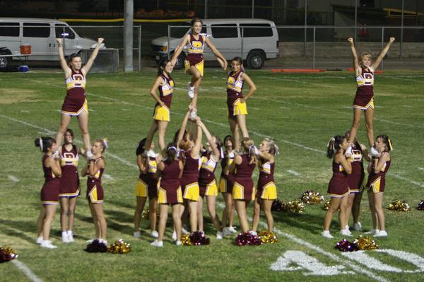

Spotting
While doing any form or type of stunt for beginners and in general you should make sure to have spotters; especially when learning a new stunt. When stunting, there should always be at least 2 or more who are surrounding the stunt so if the flyer falls they will be caught. The neccesity for spotters is important because we do not want the flyer to fall and get a concussion or injure themselves.
